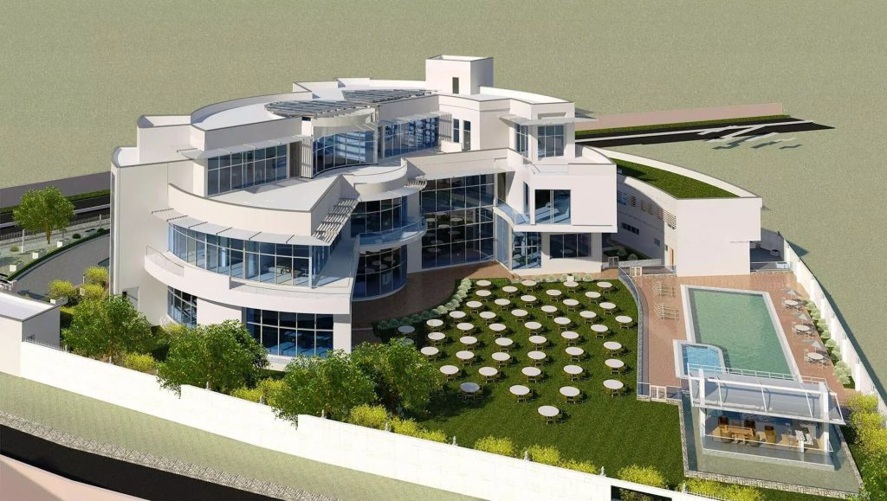

Alakija House Ikoyi, Nigeria: $700 Million
Owned by one of the richest women in Africa, Folorunsho Alakija
Reportedly, it was designed by German construction giant Julius Berger and is set to be bullet proof and full of technology. The massive house is located in Lagos Nigeria and it looks very minimalistic and clean. For that price, the house is among the most expensive estates in the world and definitely the most expensive in Africa. For only 2 people Mrs. Alakija and her husband.
More info BuyOther expensive mansions
Casablanca Villa, Cape Town: $35 Million
The 3100 square meter deluxe mansion, offers 8 bedrooms, 13 full bathrooms and parking for 14 cars, a private cinema. a pool and a gym. For that money you can buy 33 houses in the Camps Bay area.

Aliko Dangote House, Nigeria: $13.8 Million
The mansion has multiple bedrooms, a fully furnished living room, a conference room and a home office. Architecturally speaking, the house looks very nice, but the inside is judged by everyone.
House in Fresnaye, Cape Town: $13 Million
This is a 7-bedroom mansion with 2 swimming pools, a luxurious formal lounge with a fireplace, a gym, domestic quarters, a security guard office, 3 garages and additional parking for 7 cars.
Clifton House, Cape Town: $7 Million
This is a 2-floor 6-bedroom ultra-luxury home with a swimming pool that looks over the ocean, 3 garages, a rooftop terrace and an auction record online for one of the most expensive houses in Cape Town.
Are these too basic for you? No problem! We've got you covered, reach out to us for more expensive mansions at your desired location in Africa.
About Us ContactStill not convinced? To be honest, nor are we. That's why we're selling them, not buying them.